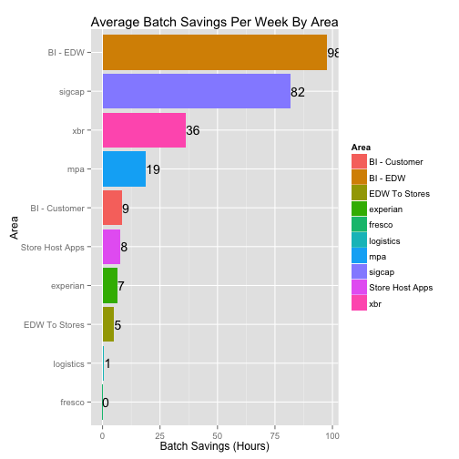

We are currently working on a project to migrate our ETL (Extract, Transform and Load) Platform. ETL Jobs are categorized into many projects based on functional areas. Each functional team is interested in reviewing the jobs they own and support. To date we have migrated 10 projects and total of 2919 jobs. Monitoring performance of these projects is crucial for success of the teams. With several thousands of of these jobs executing on a daily basis - it could be quiet challenging to get keep tabs on the Batch Performance. This app comes to your rescue!!! All you need to know is your functional area/project name. The app helps monitor the batch performance gained by the migration project and helps developers pin point batch delays to a set of jobs to fine tune.
- If you are interested in a test drive - access the app here: https://rnarasim.shinyapps.io/ETLUpgradeProjectPerformance
ETL Project Status
- Chart below shows Batch Performance gained by Functional Area/Project:

- If you are interested in a test drive - access the app here: https://rnarasim.shinyapps.io/ETLUpgradeProjectPerformance
What is in it for Functional Area Managers?
- Review Performance of ETL projects your team support with one click of a button
- Monitor and take action if you see batch delays
- If you are interested in a test drive - access the app here: https://rnarasim.shinyapps.io/ETLUpgradeProjectPerformance
What is in the App For Developers?
- Review Project and Job Level Performance
- Tune Jobs that are critical to the success of your batch operations
- If you are interested in a test drive - access the app here: https://rnarasim.shinyapps.io/ETLUpgradeProjectPerformance
To Do for next release
- New Project be automatically setup for stats collection
- Push updated datasets daily to the app.